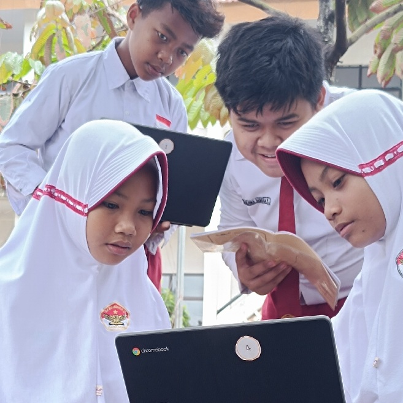

SDN Karanganyar 02 menerapkan sistem pembelajaran yang interaktif dan menyenangkan. Kami percaya bahwa anak-anak akan lebih mudah memahami materi jika mereka terlibat langsung dalam proses belajar.
Bagaimana Prosesnya?
Dalam kegiatan pembelajaran kelas, guru menggunakan metode tematik. Siswa tidak hanya mendengarkan ceramah, tetapi juga diajak untuk berdiskusi kelompok, melakukan praktik sederhana, dan mempresentasikan hasil karya mereka.
Selain itu, asesmen yang dilakukan bukan sekadar ujian tertulis. Guru secara aktif mengamati perkembangan sikap, pengetahuan, dan keterampilan siswa setiap hari, sehingga pendampingan bisa dilakukan secara personal.
Dokumentasi Kegiatan

Dengan lingkungan yang tertib dan hangat, setiap siswa didorong untuk berani bertanya, mencoba hal baru, dan bekerja sama dengan teman-temannya.
arrow_back Kembali ke Halaman Utama